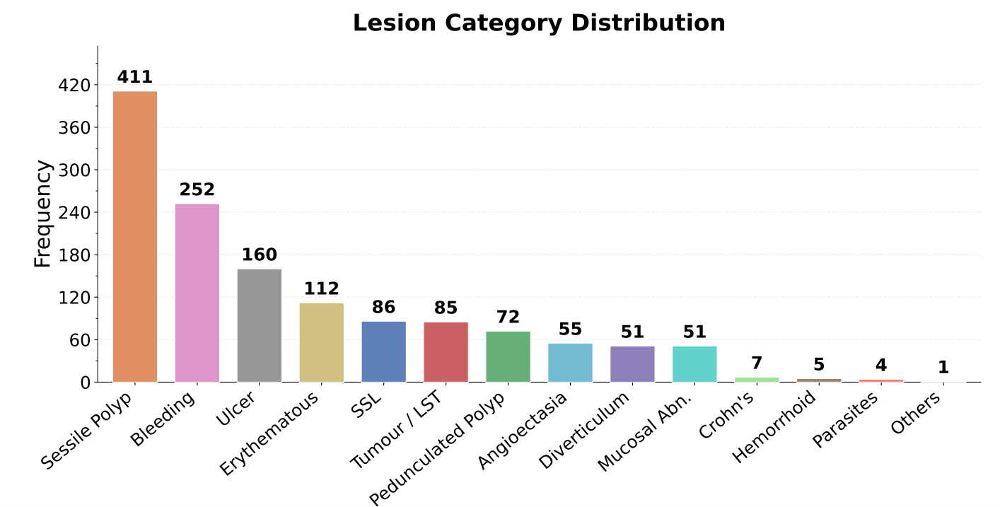
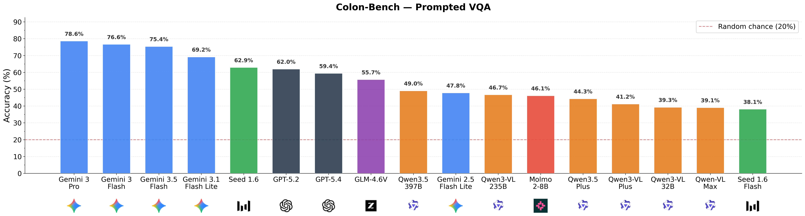
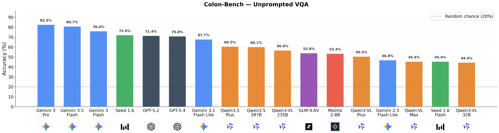
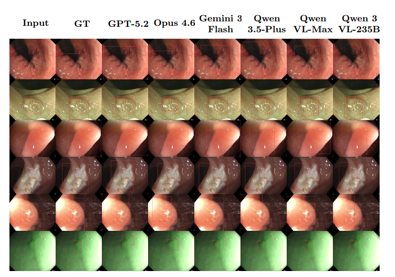
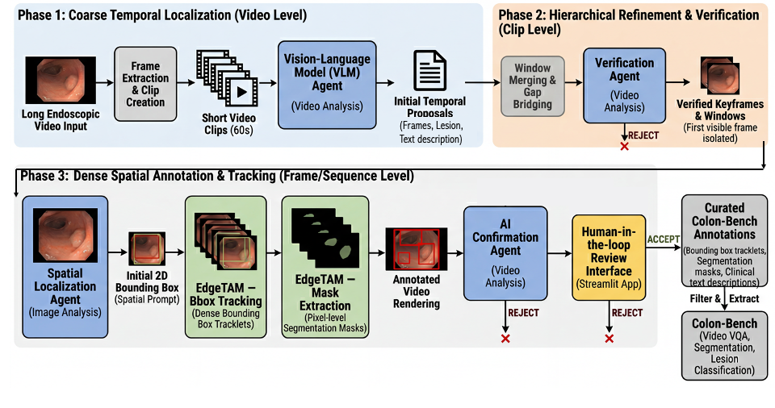
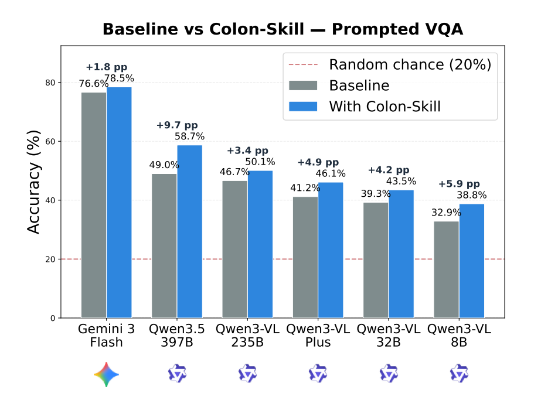

Early screening via colonoscopy is critical for colon cancer prevention, yet developing robust AI systems for this domain is hindered by the lack of densely annotated, long-sequence video datasets. Existing datasets predominantly focus on single-class polyp detection and lack the rich spatial, temporal, and linguistic annotations required to evaluate modern Multimodal Large Language Models (MLLMs). To address this critical gap, we introduce Colon-Bench, generated via a novel multi-stage agentic workflow. Our pipeline seamlessly integrates temporal proposals, bounding-box tracking, AI-driven visual confirmation, and human-in-the-loop review to scalably annotate full-procedure videos. The resulting verified benchmark is unprecedented in scope, encompassing 528 videos, 14 distinct lesion categories (including polyps, ulcers, and bleeding), over 300,000 bounding boxes, 213,000 segmentation masks, and 133,000 words of clinical descriptions. We utilize Colon-Bench to rigorously evaluate state-of-the-art MLLMs across lesion classification, Open-Vocabulary Video Object Segmentation (OV-VOS), and Visual Question Answering (VQA). The MLLM results demonstrate surprisingly high localization performance in medical domains compared to SAM-3. Finally, we analyze common VQA errors from MLLMs to introduce a novel "colon-skill" prompting strategy, improving zero-shot MLLM performance by up to 9.7% across most MLLMs.
Table 1. Colon-Bench provides a broader lesion taxonomy and richer supervision compared to prior colonoscopy datasets.
| Attribute | Kvasir-SEG | SUN | PolypGen | REAL-Colon | CAS-Colon | Colon-Bench (Ours) |
|---|---|---|---|---|---|---|
| Year | 2020 | 2021 | 2023 | 2024 | 2025 | 2026 |
| Focus | Segmentation | Detection | Segmentation | Detection | Anatomy | Lesion, Video Segmentation, & Text |
| Number of Videos | N/A | N/A | N/A | 60 | 78 | 528 |
| Total Frames/Images | 1,000 | 158,690 | 6,282 | 2,757,723 | 1,961,100 | 464,035 |
| Lesion Classes | 1 (Polyp) | 1 (Polyp) | 1 (Polyp) | 1 (Polyp) | N/A | 14 |
| Bounding Boxes | N/A | 158,690 | 6,282 | 351,264 | N/A | 300,132 |
| Segmentation Masks | 1,000 | N/A | 6,282 | N/A | Yes | 213,067 |
| Language Descriptions | N/A | N/A | N/A | N/A | N/A | Yes (133k Words) |
The dataset spans 14 lesion categories identified through multi-label keyword matching over clinician-verified text fields: Sessile Polyps (411), Bleeding (252), Ulcers (160), Erythematous (112), Tumors (86), LST/Flat Polyps (85), Pedunculated Polyps (72), Angiectasia (55), Diverticulum (51), Mucosal Abnormalities (51), Crohn's (7), Hemorrhoids (5), Parasites (4), and Other (1).

Summary of model performance across the four benchmark tasks: visual prompted and unprompted video Visual Question Answering (VQA) accuracy (with visual box prompts and without them), binary lesion classification precision/recall/F1, and open-vocabulary video segmentation IoU/Dice. The video segmentation is based on 3 box detections from each MLLM prompting the same EdgeTAM tracker. Best scores per metric are shown in bold green.
| Model | VQA Accuracy | Lesion Classification | Segmentation | |||||
|---|---|---|---|---|---|---|---|---|
| Prompted | Unprompted | Accuracy | Precision | Recall | F1 | IoU | Dice | |
Detailed VQA results for prompted and unprompted splits.


Colon-Bench Qualitative Detection Comparisons. Each row shows a different colonoscopy video frame: (1) erythematous region, (2) bleeding, (3) tumor, (4) ulcer, (5) pedunculated polyp, (6) sessile polyp. Columns show the input, ground-truth bounding box, and predictions from each model. Correct detections are in green; false positives are in red. These detections are used in the downstream box-level detection or prompted VQA via the FlipTAM tracker.


The Colon-Bench annotation pipeline operates in three phases: (1) Temporal Proposals: A VLM detection agent scans full-procedure colonoscopy videos to identify candidate lesion windows. (2) Spatial Annotation: Bounding-box tracking via EdgeTAM and AI-driven confirmation with visual cues add dense spatial annotations while progressively filtering false positives. (3) Human-in-the-Loop Review: A reviewing physician validates the pre-rendered clips with spatial overlays, rejecting only 11.6% of presented windows, demonstrating strong agreement with the AI filters. The accepted annotations are then used to create a comprehensive Colon-Bench for MLLMs evaluations, covering multiple video tasks: Visual Question Answering (VQA), binary lesion classification, and Open-Vocabulary Video Object Segmentation (OV-VOS).
Prompted VQA
Unprompted VQA
Drag the slider to compare segmentation masks with the original video.
We analyze common VQA errors from MLLMs to construct a novel colon-skill prompting strategy —
a structured SKILL.md context file extracted by analyzing error patterns across lesion categories
and failure modes. This skill is augmented to the MLLMs during VQA benchmarking, improving zero-shot performance by up to 9.7%.
Colon-Skill. The SKILL.md file used as context augmented to the MLLMs in the VQA benchmarks.
The skill is extracted by analysing error patterns under lesion categories and examples of failure modes.
Colon-Skill improves prompted VQA accuracy by up to 9.7%.

Colon-Bench is intended strictly for academic research, and any form of commercial use is prohibited. Copyright for all videos is retained by their owners. The dataset as a whole is licensed under the Creative Commons Attribution (CC BY) license, consistent with the licensing of the original REAL-COLON dataset.
@misc{hamdi2026colonbenchagenticworkflowscalable,
title={Colon-Bench: An Agentic Workflow for Scalable Dense Lesion Annotation in Full-Procedure Colonoscopy Videos},
author={Abdullah Hamdi and Changchun Yang and Xin Gao},
year={2026},
eprint={2603.25645},
archivePrefix={arXiv},
primaryClass={eess.IV},
url={https://arxiv.org/abs/2603.25645},
}